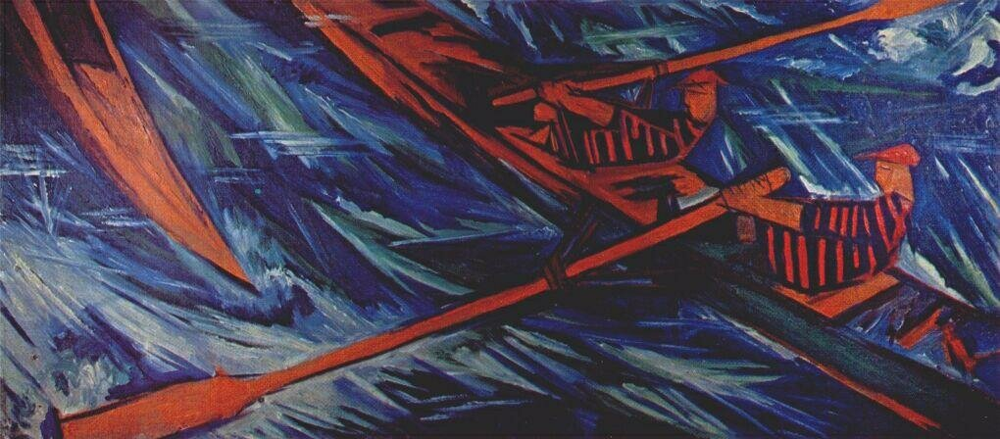

 <div style="text-align:left"><span style="font-size: medium;">В минувшую субботу сходили мы с внучкой на выставку Натальи Гончаровой, которую устроители назвали &#34;Между Востоком и Западом&#34;. Говорят, фактически первая полная выставка &#34;амазонки авангарда&#34; в России за последние сто лет. Мы невесть какие ценители авангарда, поэтому вряд ли сможем сказать новое слова по существу. Соня при входе сказала, окинув взглядом всю экспозицию: мрачновато как-то. После осмотра: «Колюче и рогато». Я в обоих случаях промолчал. Не потому, что сказать было нечего, а потому что не мог всплывшие вдруг ассоциации выразить на ходу, между делом.<br/><p style="margin: 0cm 0cm 0pt 6cm;"><br/> <span style="font-size: medium;">«Пусть мысль твоя, когда она созреет,<br/>Предстанет нам законченно чиста»</span></p><br/>Законченности и чистоты достичь мне уже не успеть, но вспомнить конец шестидесятых прошлого века никто не помешает. Даже те, кто считает все «совковое» время убогим и примитивным. Мы не возражаем: считайте, дети миллениума, как хотите, у нас свобода. <br/><br/>Именно в то время я впервые познакомился с творчеством Гончаровой...<br/><br/>Люблю, когда в живописи есть море, даль и простор, корабли и моряки.. Поэтому люблю Гончарову. <br/><br/>Но у нее нет моря. Нет кораблей и моряков. На выставке - может быть в одних только  «Гребцах» (1911 год) напрямую мы видим «тружеников моря». <br/><div style="text-align:center"></div><br/>Не судите об этой работе по компьютерной синюшной картинке. На выставке она очень удачно размещена и освещена. Есть возможность отойти подальше, сесть на диванчик и полюбоваться солнцем на веслах и фигурах гребцов, аквамарином глубины и белыми перьями пены, подчеркивающими стремительность движения.<br/><br/><a name="cutid1"></a> И все же Гончарова и море неразделимы. Не мной только это замечено. Специально полез в задние ряды книжных шкафов, чтобы достать читанную-перечитанную когда-то поэму в прозе Марины Цветаевой, которая названа так буднично «Наталья Гончарова. Жизнь и творчество».  Написано в 1928 году. Издано у нас в 1969. Может быть есть и более ранние издания, но я нашел только это. В год, когда я купил книгу Цветаевой, мне было еще совсем немного лет, и погоны капитан-лейтенанта на плечах не были преградой для осуществления юношеской мечты о море.<br/><br/>Цветаева пишет о Гончаровой («этой», в отличие от «той») – и чудесным образом, постепенно, образ моря появляется в обстоятельствах ее жизни и чертах ее творчества. <br/><br/>...Море появляется еще раньше, чем Цветаева попадает в дом Гончаровой. Она никак не может найти этот дом. Даже улицы, где он стоит, не находит.<br/><br/><br/><p style="margin: 0cm 0cm 0pt 6cm;"><br/> <span style="font-size: medium;"> Не уличка, а ущелье, а еще лучше – теснина. Настолько не улица, что каждый раз, забыв и ожидая улицы – ведь и имя есть, и номер есть! – проскакиваю и спохватываюсь уже у самой Сены. И – назад – искать.</span></p><br/>И дальше<br/><p style="margin: 0cm 0cm 0pt 6cm;"><br/> <span style="font-size: medium;">Из ущелья дует. Кажется, что на конце его живет ветер, бог с надутыми щеками. Ветер – живет, может ли ветер жить, жить – это где-нибудь, а ветер везде, а везде – это быть. Но есть места с вечным ветром, с каким-то водоворотом воздуха, один дом в Москве, например, где бывал Блок и где я бывала по его следам – уже остывшим. Следы остыли, ветер остался. Этот ветер, может быть, в один из своих приходов – одним из своих прохождений – поднял он и навеки приковал к месту. Место, где вещь – всегда, и есть местопребывание – какое чудесное, кстати, слово, сразу дающее и бытность и длительность, положение в пространстве и протяжение во времени, какое пространное, какое протяжное слово. Так Россия, например, местопребывание тоски, о которой так же дико, как о ветре, сказать: живет. А – живет! И ветер живет. На конце той улички, чтобы лучше дуть в лицо – там, у ее начала.<br/><br/>Всякий ветер морской, и всякий город, хотя бы самый континентальный, в часы ветра – приморский. «Пахнет морем», нет, но: дует морем, запах мы прикладываем. И пустынный – морской, и степной – морской. Ибо за каждой степью и за каждой пустыней – море, за-пустыня, за-степь. – Ибо море здесь как единица меры (безмерности).<br/><br/>Каждая уличка, где дует, портовая. Ветер море носит с собой, превносит. Ветер без моря больше море, чем море без ветра.</span></p><br/>На подготовленную почву упали эти слова Цветаевой. Ветер всегда был для меня синонимом моря.<br/><br/>…Цветаева поднимается в мастерскую Гончаровой по старым деревянным ступеням («Если двор – великаны мостили, то лестницу они уже громоздили. Игра в кубики, здесь – кубы. Я выше, ты еще выше, я утес, ты – ничего.») и тут же готово сравнение: <br/>«Гончарова к себе идет по старым мастерам, старейшему из них – времени.»<br/><br/>На выставке трудно проследить этот путь, но результаты его очевидны. «Памятуя слова: «выше нельзя, потому что выше нет», этажей не считаю. Этажи? Эпохи. По такой лестнице самый быстроногий идет сто лет.» <br/><br/>И вот<br/><br/><p style="margin: 0cm 0cm 0pt 6cm;"><br/> <span style="font-size: medium;">Пустыня. Пещера. Что еще? Да палуба! Первой стены нет, есть – справа – стекло, а за стеклом ветер: море.</span></p><br/>И снова море. А где море – там тяжкий труд.<br/><p style="margin: 0cm 0cm 0pt 6cm;"><br/> <span style="font-size: medium;">Ряд оконченных холстов – творчеством доделанная стихия творчества, день седьмой. Много дней седьмых в жизни Натальи Гончаровой, здесь, перед глазами, лицом к стене – от глаз. Дней седьмых – в прошлом, никогда в настоящем. Творящее творение тем отличается от Творца, что у него после шестого сразу первый, опять первый. Седьмой нам здесь, на земле, не дан, дан может быть нашим вещам, не нам.</span></p><br/><br/>Нам дано трудиться, но не дано завершить наши дела. Именно так.<br/><br/>Наталья Гончарова – почти землячка, «родилась в Средней России, в самом сердце ее, в Тульской губернии, деревне Лодыжино. Места толстовско-тургеневские. Невдалеке Ясная Поляна, еще ближе Бежин Луг. А в трактире уездного городка Чермь – беседа Ивана с Алешей.»  Сама Гончарова вспоминает: ««В гимназию поступила прямо из деревни. От всех доставалось, за все доставалось. Особенно от словесника за орфографию». – Плохую? – «Тульскую. Говорила по-тульски – <i>х</i> вместо <i>ф</i> и все такое – а писала как говорила. Написанным это должно было выглядеть ужасно». <br/><br/>Есть ли у художника личная биография? Кроме той, в ремесле. И можно ли считать, что для рождения художника нужны какие-то благоприятные условия?<br/><p style="margin: 0cm 0cm 0pt 6cm;"><br/> <span style="font-size: medium;">Благоприятные условия? Их для художника нет. Жизнь сама неблагоприятное условие. Всякое творчество (художник здесь за неимением немецкого слова Кünstlег) – перебарыванье, перемалыванье, переламыванье жизни – самой счастливой. Не сверстников, так предков, не вражды, ожесточающей, так благожелательства, размягчающего. Жизнь – сырьем – на потребу творчества не идет. И как ни жестоко сказать, самые неблагоприятные условия – быть может – самые благоприятные. (Так, молитва мореплавателя: «Пошли мне Бог берег, чтобы оттолкнуться, мель, чтобы сняться, шквал, чтобы устоять!»)</span></p><br/><br/>Продолжим эти заметки в другой раз.</span></div> 